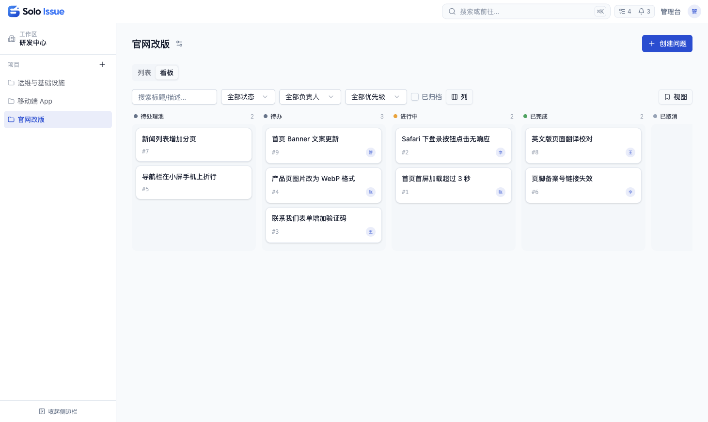
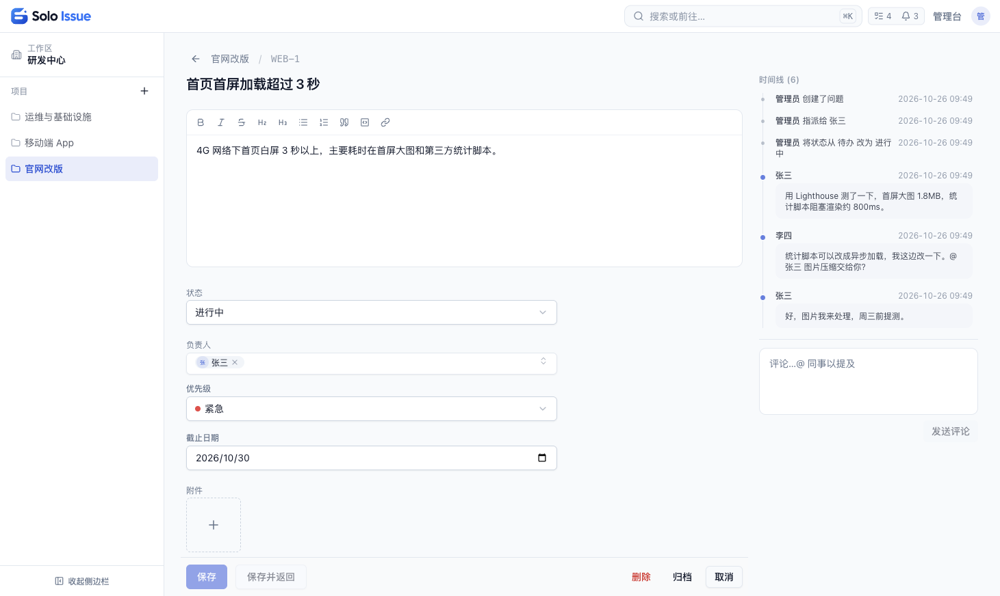

为什么选 Solo Issue
四个特质决定了它的形态。
自托管
部署在你自己的服务器或电脑上，数据只存在你自己的数据库里。
企业微信集成
可用企业微信身份登录，提醒推送到企业微信。
AI 可接入
提供 REST API 和 MCP 服务器，支持 MCP 的 AI 助手可直接操作。
MIT 开源
免费使用，当前为 0.0.2 内测版本。
适用场景
先把适合与不适合说清楚，再决定要不要用。
适合
- ✓团队日常用企业微信沟通，希望群里提到的问题有记录、有负责人、可查进度
- ✓数据必须存放在自己的服务器上，不能使用第三方在线服务
- ✓觉得 Jira、禅道等工具过重，只需要「记问题、分负责人、跟状态」
- ✓个人开发者，在自己电脑上管理项目任务
功能
覆盖「记问题、分负责人、跟状态」所需的全部能力。
固定编号与链接
每个问题有项目内编号和固定链接，描述、讨论、附件、处理进度集中在一个页面。
通知提醒
被指派、被 @、状态变更、新评论时收到站内通知；接入企业微信后同步推送，可按提醒类型单独关闭。
变更记录
状态、负责人、描述、自定义字段的每次修改及每条评论，都记录操作人和时间，显示在问题时间线中。
自定义字段
支持文本、数字、日期、单选、多选、成员六种类型；单选、多选可用于筛选；字段配置可导出并导入其他项目。
看板与列表
看板拖动卡片即可改状态；列表按状态、负责人和字段筛选，可保存常用条件；描述和评论支持富文本、粘贴图片和附件。
权限控制
工作区成员分负责人、成员、访客三种角色，访客只读；项目可设为私有，仅项目成员和工作区负责人可见。
AI 助手接入
支持 MCP 的 AI 助手可查询、创建、更新问题和发表评论；操作记在令牌所属账号名下，权限不超过该账号。
部署简单
单机一条 docker compose 命令启动，只依赖 PostgreSQL，无需额外的缓存或消息队列；界面支持中文和英文。
界面预览


快速开始
一条命令启动，只依赖 PostgreSQL。
-
1
前置条件
已安装 Docker 和 Docker Compose，8081 端口空闲；如被占用，可在 apps/web/.env 中修改 APP_PORT，并同步修改 APP_URL 中的端口。
-
2
下载并配置
克隆仓库并复制环境文件模板，然后编辑 apps/web/.env，取消注释并填入管理员账号——必填，不设置密码则无法用邮箱登录。
git clone https://github.com/xesam/solo-issue.git solo-issue cd solo-issue cp apps/web/.env.example apps/web/.env# apps/web/.env ADMIN_EMAIL=admin@example.com ADMIN_INIT_PASSWORD=change-me-on-first-login -
3
启动
首次启动需要构建镜像，耗时取决于网络状况。
docker compose --env-file apps/web/.env up --build -d - 4
通过服务器 IP 以 HTTP 访问时，需在 apps/web/.env 中加入 ALLOW_INSECURE_COOKIES=1 后重启；正式部署建议配置 HTTPS，不要开启此项。
技术栈
下一步
官网之外，细节都在仓库文档里。